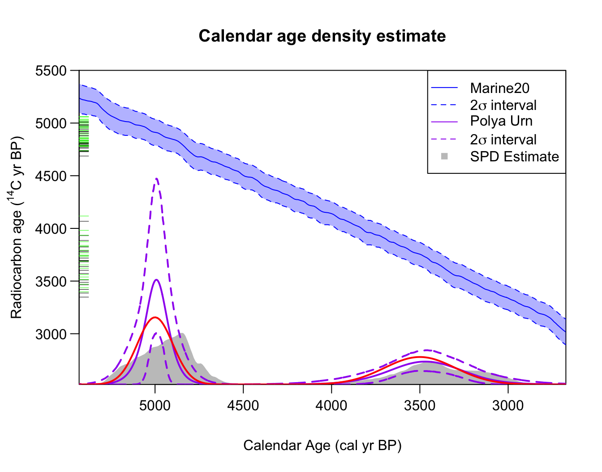
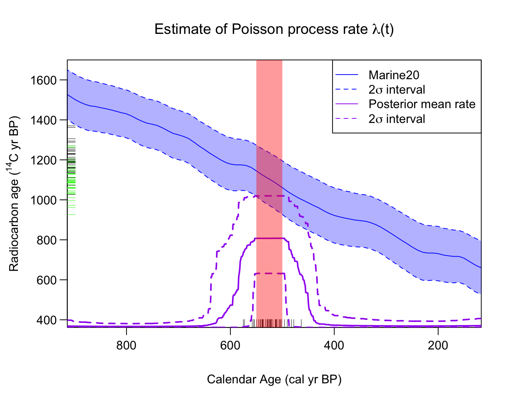
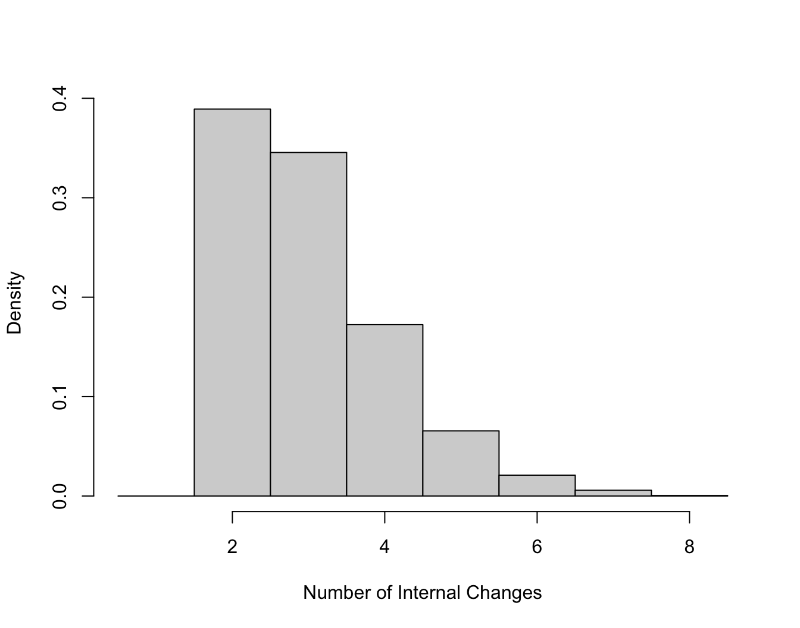
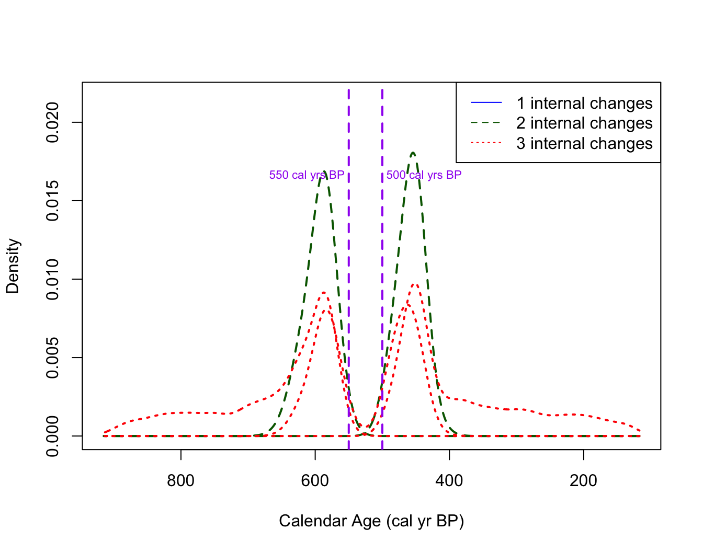
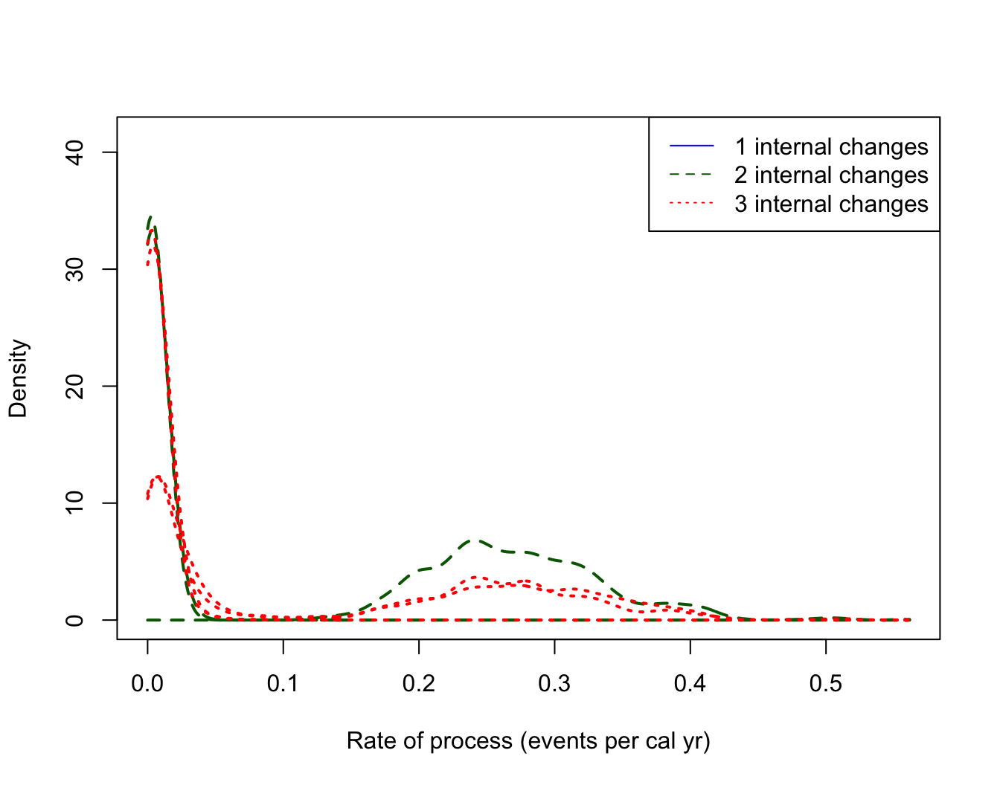

Calibrating and Summarising Marine 14C Samples
Source:vignettes/Calibrating-marine-samples.Rmd
Calibrating-marine-samples.Rmd
library(carbondate)
set.seed(15)Calibrating Marine 14C Determinations with a
It is possible to calibrate and summarise marine C determinations within the library. Marine C determinations are slightly more complex to calibrate since they require a localised adjustment before calibration against the Marine20 calibration curve, see Heaton et al. (2023) for details on marine calibration and Heaton et al. (2020) for the Marine20 calibration curve.
Note: You must use the specific adjustment appropriate for the particular marine calibration curve you are using for calibration (as the estimates of change each time the marine calibration curve is updated). The most recent estimates , calculated based on the Marine20 calibration curve, can be found at http://calib.org/marine/
Calibrating a Single Marine 14C Sample
As described in the independent calibration
vignette, we can calibration an individual marine
C
sample in CalibrateSingleDetermination() by specifying the
inbuilt marine20 calibration curve (Heaton et al.
2020), and providing an estimate for the localised
(and its
-uncertainty
by specifying delta_r and delta_r_sig:
calibration_result <- CalibrateSingleDetermination(
rc_determination = 1413,
rc_sigma = 25,
F14C_inputs = FALSE,
calibration_curve = marine20,
delta_r = 150,
delta_r_sig = 50,
plot_output = TRUE)
Here the radiocarbon age axis shows the analytical 14C determination in red, while the adjusted determination (after applying a 14C yrs) is shown in green. Intuitively, we calibrate the green (adjusted) value against the Marine20 curve.
Note: One can also use the delta_r and
delta_r_sig arguments to specify a general offset to a
calibration curve (i.e., these arguments can also be used when using the
IntCal and SHCal curves if the samples is thought to be offset).
Non-parametric Calendar Age Summarisation from a Set of Marine 14C Samples
If we have a set of marine 14C samples which share a
common
then we can use the PolyaUrnBivarDirichlet() or
WalkerBivarDirichlet() functions to obtain a non-parametric
DPMM summary of the joint (predictive) calendar age distribution. To do
this we specify the value of
and uncertainty as additional arguments, and state that we wish to use
the marine radiocarbon calibration curve.
Worked Example - A Marine Mixture of Two Normals
We consider the artificial two_normals_marine dataset
which contains 50 simulated marine 14C samples. This dataset
is analogous to the atmospheric two_normals but the
14C determinations are instead sampled from the marine
environment.
Specifically, the two_normals_marine dataset was created by
first drawing 50 calendar ages from a mixture of two normal densities -
one centred at 3500 cal yr BP (with a
1
standard deviation of 200 cal yrs); and another (more concentrated)
centred at 5000 cal yr BP (with a
1
standard deviation of 100 cal yrs). The corresponding 50
C
determinations are then simulated using the Marine20 calibration curve
(Heaton et al.
2020) with an assumed
of
C
yrs. The analytical measurement uncertainty of each determination is set
to be 25
C
yrs.
We wish to investigate if we can reconstruct the underlying mixture of two normals calendar age distribution, from just the C values. For example, if we use the recommended Polya Urn approach:
polya_urn_output <- PolyaUrnBivarDirichlet(
rc_determinations = two_normals_marine$c14_age,
rc_sigmas = two_normals_marine$c14_sig,
calibration_curve = marine20,
delta_r = -50,
delta_r_sig = 30)
polya_DPMM_plot <- PlotPredictiveCalendarAgeDensity(
output_data = polya_urn_output,
show_SPD = TRUE)
Note: Here we have also shown the underlying calendar age distribution, consisting of a mixture of two normals, that was used for simulating the data in red.Poisson process rate estimation from a set of marine 14C samples
If we have a set of marine 14C samples which share a
common
then we can use the PPcalibrate() function, specifying the
value of
and its corresponding uncertainty as additional arguments, and stating
we wish to use the marine radiocarbon calibration curve.
Example - Uniform Phase Marine Data
The dataset pp_uniform_phase_marine contains 40
simulated marine 14C samples with underlying calendar ages
that have been sampled uniformly from the calendar period from [550,
500] cal yr BP. The corresponding
C
determinations are then simulated based upon the Marine20 calibration
curve with an assumed
of
C
yrs. The analytical measurement uncertainty of each determination is set
to be 15
C
yrs. Effectively, this example is analogous to the atmospheric dataset
pp_uniform_phase but the determinations are instead sampled
from the marine environment.
We wish to investigate if we can reconstruct the underlying uniform phase calendar age distribution, from just the C values.
# Fit the Poisson process model to marine 14C data
PP_fit_output_marine <- PPcalibrate(
rc_determinations = pp_uniform_phase_marine$c14_age,
rc_sigmas = pp_uniform_phase_marine$c14_sig,
calibration_curve = marine20,
delta_r = 100,
delta_r_sig = 20,
n_iter = 1e5,
show_progress = FALSE)
# Plot the posterior mean rate
posterior_mean_marine_plot <- PlotPosteriorMeanRate(PP_fit_output_marine)
# Add shading to show the period from which the underlying data were sampled
AddShadingPlot(posterior_mean_marine_plot,
x_start = 550, x_end = 500,
col = "red")
Here, on the radiocarbon age axis, we show the observed C marine determinations in black, and the adjusted determinations (after applying a 14C yrs) are shown in green. Intuitively, we jointly calibrate and summarise the green (adjusted) values against the Marine20 curve.In this example, we can see that the Poisson process summarisation still provides a posterior estimate for the sample occurrence rate that is consistent with the true (simulated) uniform phase [550, 500] cal yr BP calendar age distribution. The times of the changepoints are however less certain and can extend beyond this short 50 cal yr period (see also the plot of changepoint locations shown below). This is perhaps to be expected since the Marine20 curve is less precise and so a broader range of calendar ages are consistent with the simulated 14C data.
We can also access the estimated posterior mean rate
# Access the actual posterior
posterior_marine_rate <- posterior_mean_marine_plot$posterior_rate
head(posterior_marine_rate)
#> calendar_age_BP rate_mean rate_ci_lower rate_ci_upper
#> 1 117 0.005500639 2.686674e-05 0.02765431
#> 2 118 0.005500892 2.686674e-05 0.02765431
#> 3 119 0.005496691 2.686674e-05 0.02765431
#> 4 120 0.005496139 2.686674e-05 0.02765431
#> 5 121 0.005467455 2.686674e-05 0.02765431
#> 6 122 0.005467455 2.686674e-05 0.02765431Plotting the number of changepoints and their locations
The object PP_fit_output_marine can also be accessed
directly or used with the other in-built plotting functions just as if
the underpinning
C
data were atmospheric, for example, we can access the posterior estimate
of the number of changepoints:
PlotNumberOfInternalChanges(PP_fit_output_marine)
and the posterior estimate of the location of those changepoints (conditional on their number):
posterior_changepoint_marine_plot <- PlotPosteriorChangePoints(PP_fit_output_marine)
#> Warning in PlotPosteriorChangePoints(PP_fit_output_marine): No posterior
#> samples with 1 internal changes
# Add lines to show the times of the changepoints in
# the underlying distribution from which the data were
# simulated at 500 and 550 cal yr BP
AddLinePlot(
posterior_changepoint_marine_plot,
v = 550,
col = "purple",
lwd = 2,
lty = 2)
AddLinePlot(
posterior_changepoint_marine_plot,
v = 500,
col = "purple",
lwd = 2,
lty = 2)
AddTextPlot(posterior_changepoint_marine_plot,
x = 550, y = 0.0165,
labels = expression(paste("550 cal yrs BP")),
cex = 0.7,
pos = 2,
offset = 0.2,
col = "purple")
AddTextPlot(posterior_changepoint_marine_plot,
x = 500, y = 0.0165,
labels = expression(paste("500 cal yrs BP")),
cex = 0.7,
pos = 4,
offset = 0.2,
col = "purple")
We can also plot the heights (i.e. rates) in each interval
posterior_heights_marine_plot <- PlotPosteriorHeights(PP_fit_output_marine)
#> Warning in PlotPosteriorHeights(PP_fit_output_marine): No posterior samples
#> with 1 internal changes